本頁以中文呈現第二張與第三張地圖的完整環境、三種戰術視角與 Battle runtime 證據。三張地圖共用 environment production framework，但保留各自的建築、材質、地標、路線與光影 identity。
地圖特色：沙岩／混凝土／藍綠導視。
區域：A SITE、MID、CONNECTOR、B SITE、T SPAWN、CT SPAWN、APARTMENTS、PALACE、A RAMP、UNDERPASS、CATWALK / SHORT、CONNECTORS。
環境統計：333 個環境 mesh、約 4736 triangles、28 個材質家族。
遮擋：沿用高位視角智慧淡化／隱藏，未修改碰撞與玩法。
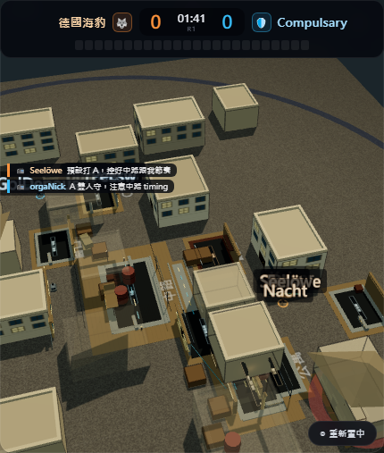
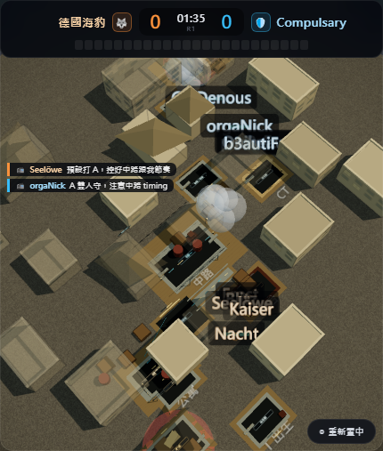
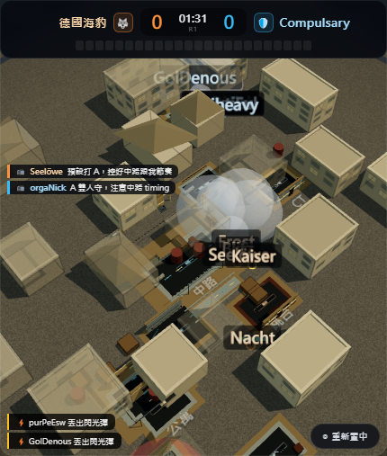
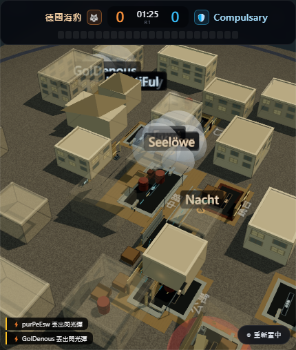
地圖特色：沙岩／塵土／藍綠導視。
區域：A SITE、B SITE、T SPAWN、CT SPAWN、MID、LONG、CATWALK / SHORT、B TUNNEL、MID DOORS / LOWER。
環境統計：235 個環境 mesh、約 3134 triangles、28 個材質家族。
遮擋：沿用高位視角智慧淡化／隱藏，未修改碰撞與玩法。
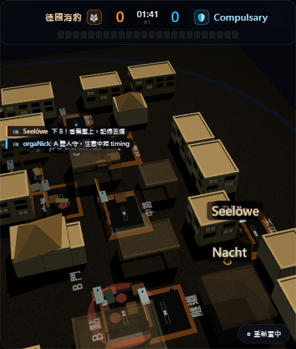
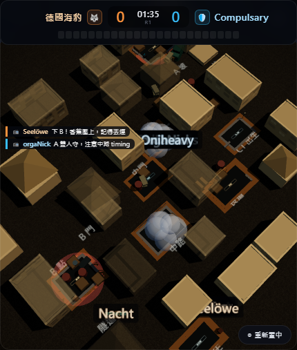
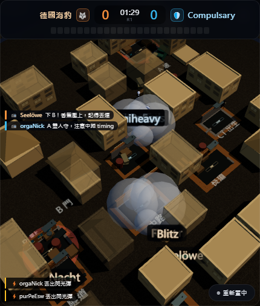
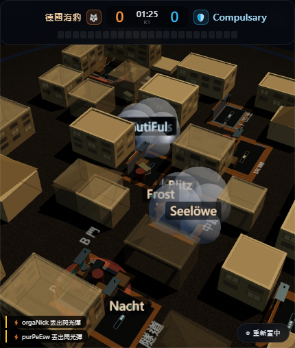
地圖特色：陶土／紅瓦／橄欖綠。
區域：A SITE、B SITE、T SPAWN、CT SPAWN、BANANA、MID / SECOND MID、A CONNECTOR、APARTMENTS、B TOP、PIT / CEMETERY、CONNECTORS。
環境統計：288 個環境 mesh、約 3998 triangles、28 個材質家族。
遮擋：沿用高位視角智慧淡化／隱藏，未修改碰撞與玩法。
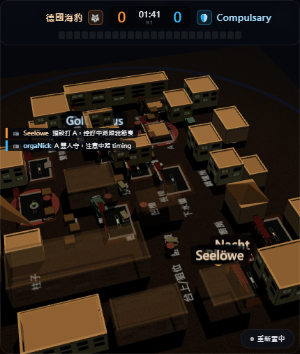
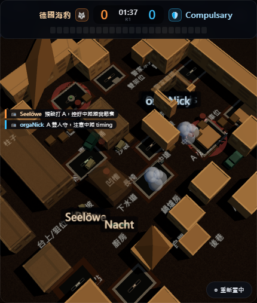
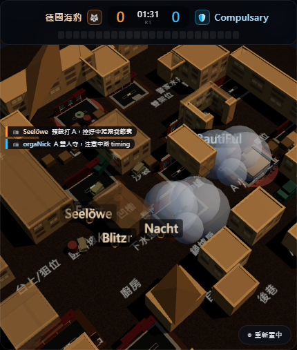
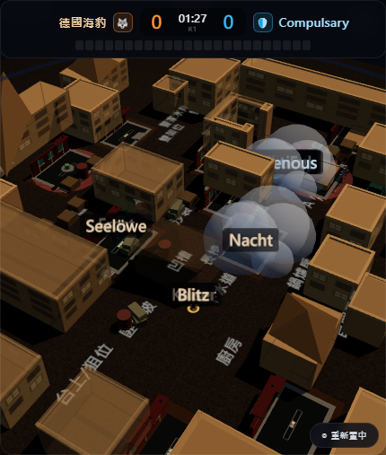
| 地圖 | 場景特色 | 主色系 | 環境 mesh | 估算 triangles | 視角 | 遮擋 |
|---|---|---|---|---|---|---|
| Mirage | 明亮沙漠市集戰術地圖 | 沙岩／混凝土／藍綠導視 | 333 | 4736 | 高位／總覽／戰術 | PASS |
| Dust II | 日照沙岩戰術據點 | 沙岩／塵土／藍綠導視 | 235 | 3134 | 高位／總覽／戰術 | PASS |
| Inferno | 地中海磚瓦街巷 | 陶土／紅瓦／橄欖綠 | 288 | 3998 | 高位／總覽／戰術 | PASS |
Dust II 使用日照沙岩、塵土、長道／隧道與藍綠導視；Inferno 使用陶土、紅瓦、拱門、橄欖綠與地中海街巷。Mirage 維持原有的明亮沙漠市集語言。三者共享 production framework，但沒有共用同一套建築造型或 placement。